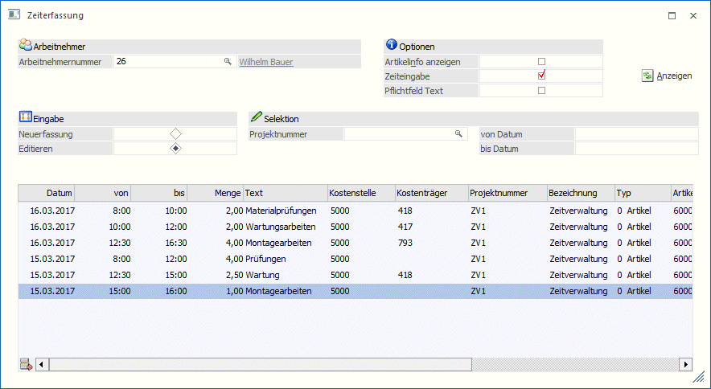
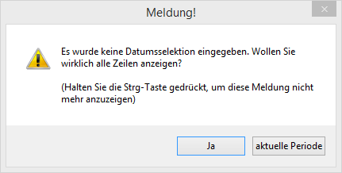
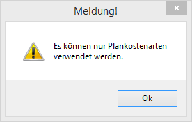
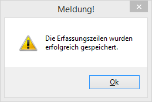
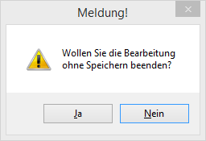

In der Projektzeiterfassung können die Arbeitszeiten der Mitarbeiter erfasst werden. Abhängig vom Benutzer gibt es unterschiedliche Voreinstellungen:

Ø Arbeitnehmernummer
Die Arbeitnehmernummer wird - wenn sie beim Benutzer hinterlegt ist, automatisch vorgeschlagen, kann aber noch indiv. geändert werden.
Optionen
In den Optionen können mehrere Einstellungen vorgenommen werden:
Ø Artikelinfo anzeigen
Wird diese Option aktiviert, dann werden zur jeweiligen Erfassungszeile auch die Artikelinfos mit angezeigt. Dazu wird ein Bereich der Tabelle als Formular dargestellt, das auch individuell verändert werden kann.
Ø Zeiteingabe
Wenn diese Option aktiviert ist, dann kann die "Menge" in Form "Uhrzeit von - bis" erfasst werden, das Programm errechnet sich dann daraus die Menge. Standardmäßig ist diese Option gesetzt.
Ø Pflichtfeld Text
Diese Option ist nur dann sichtbar, wenn der Menüpunkt von einem Administrator geöffnet wurde. Damit kann gesteuert werden, ob der Text vom BDE-Benutzer zwingend eingegeben werden muss oder nicht. Diese Option wird in weiterer Folge abgespeichert und kann auch nur wieder von einem Administrator geändert werden.
Eingabe
Über den Bereich Eingabe kann definiert werden, ob Zeilen neu erfasst werden sollen, oder ob bestehende Zeilen editiert werden sollen. Abhängig von dieser Einstellung stehen auch unterschiedliche Eingabefelder bzw. Optionen zur Verfügung:
Neuerfassung
Wenn die Option "Neuerfassung" ausgewählt ist, dann können in die Felder…
Ø Projektnummer
Ø Plankostenart
Ø Artikel
… Vorbelegungen definiert werden. D.h. diese Werte werden dann in der Erfassungszeile jeweils übernommen.
Editieren
Wenn die Option "Editieren" ausgewählt ist, dann können die Felder…
Ø Projektnummer
Ø Datum von / bis
… bearbeitet werden, womit eine Einschränkung der Erfassungszeilen vorgenommen werden kann. Wenn hier Einschränkungen vorgenommen werden, dann werden diese auch gespeichert und beim nächsten Aufruf vorgeschlagen.
Durch Anklicken des Anzeigen-Buttons werden die Einschränkungen dann auf die Erfassungszeilen der Tabelle übernommen.
Wenn bei der Eingabe von "Neuerfassung" auf "Editieren" umgeschalten wird, und bei der Selektion "von Datum - bis Datum" keine Voreinstellung getroffen ist, dann wird folgende Meldung angezeigt:

Wird die Meldung mit "JA" bestätigt, dann werden alle bereits vorhandenen Erfassungszeilen angezeigt, wobei die Zeilen nach Datum absteigend sortiert werden (d.h. die Erfassungszeile mit dem aktuellsten Datum steht an erster Stelle). Wenn die Meldung mit "aktuelle Periode" bestätigt wird, dann wird
In der Tabelle können folgende Werte erfasst werden:
Ø Datum
Eingabe des Datums, für das die Erfassung gilt.
Ø von / bis
Diese beiden Felder stehen nur zur Verfügung, wenn bei den Optionen die Einstellung "Zeiteingabe" aktiviert ist. Damit kann dann die Uhrzeit erfasst werden, die dann in die Menge umgewandelt wird.
Ø Menge
Eingabe der Menge, die für das Projekt aufgewendet wurde.
Ø Text
Hier kann ein beschreibender Text zur Erfassungszeile eingegeben werden.
Ø Kostenstelle
Eingabe der Kostenstelle, auf die die Erfassungszeile "geschrieben" werden soll.
Ø Kostenträger
Eingabe des Kostenträgers, auf den die Erfassungszeile "geschrieben" werden soll. Der Kostenträger kann auch über den Artikel vorbesetzt werden.
Ø Projektnummer
Eingabe der Projektnummer, für die die Zeit erfasst wird.
Ø Bezeichnung
Die Bezeichnung der Projektnummer wird angezeigt.
Ø Typ
Über den Typ kann entschieden werden, ob ein Artikel oder eine Ressource erfasst werden soll.
Ø Artikel/Ressource
Eingabe der Artikelnummer / der Ressource. Wenn beim AN ein "Verrechnungsartikel" hinterlegt ist, wird dieser hier automatisch vorgeschlagen und kann bei Bedarf noch geändert werden.
Ø Bezeichnung
Abhängig von der vorherigen Eingabe wird die Bezeichnung des Artikels der Ressource angezeigt.
Ø Preis
Wenn beim Projekt, das in der Erfassungszeile hinterlegt ist, ein Kunde hinterlegt ist, dann wird anhand der Preisliste, die beim Kunden hinterlegt ist, eine Preisfindung auf den Artikel der Erfassungszeile durchgeführt. Das Ergebnis der Preisfindung wird dann in diesem Feld abgestellt.
Ø Gesamt
In diesem Feld wird das Ergebnis aus Menge * Preis angezeigt.
Ø Plankostenart
Eingabe der Plankostenart, die für die Buchung in der KORE verwendet werden soll. Die Plankostenart wird vom Artikel übernommen, kann hier aber noch übersteuert werden. Wird eine Kostenart eingetragen, die keine Plankostenart ist, wird eine entsprechende Meldung ausgegeben:

Durch Anklicken des OK-Buttons werden die Erfassungszeilen gespeichert, was auch mit einer entsprechenden Meldung bestätigt wird:

Wenn die ESC-Taste gedrückt wird, und noch Erfassungszeilen vorhanden sind, die geändert oder noch nicht gespeichert wurden, erfolgt eine entsprechende Abfrage:

Wird die Meldung mit "JA" bestätigt, dann wird das Fenster geschlossen und alle Änderungen gehen verloren. Wird die Meldung mit "NEIN" bestätigt, dann bleibt das Fenster offen und es ggf. noch gespeichert werden.